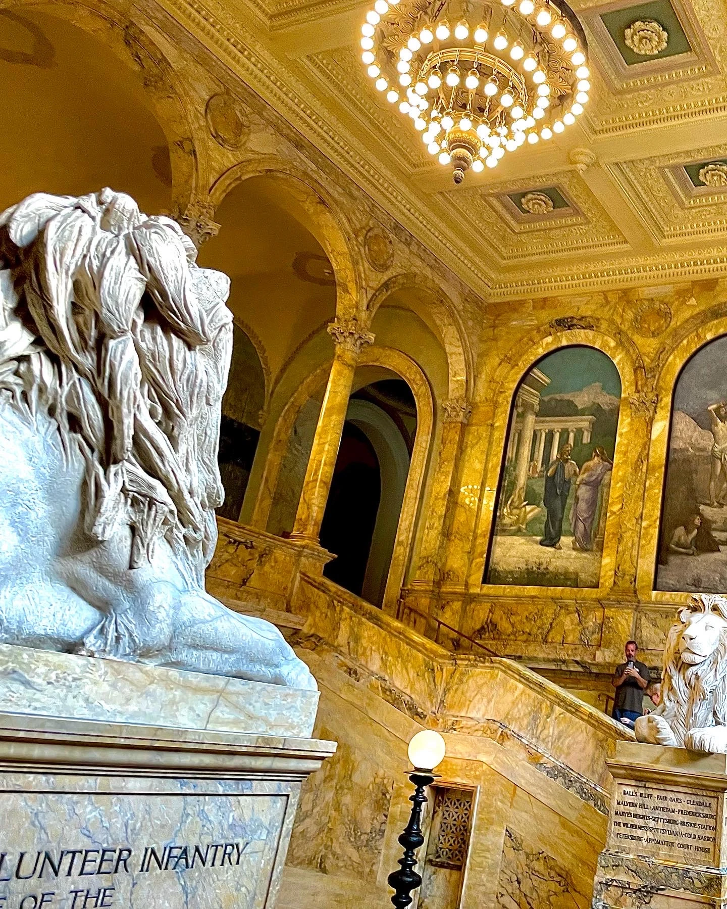
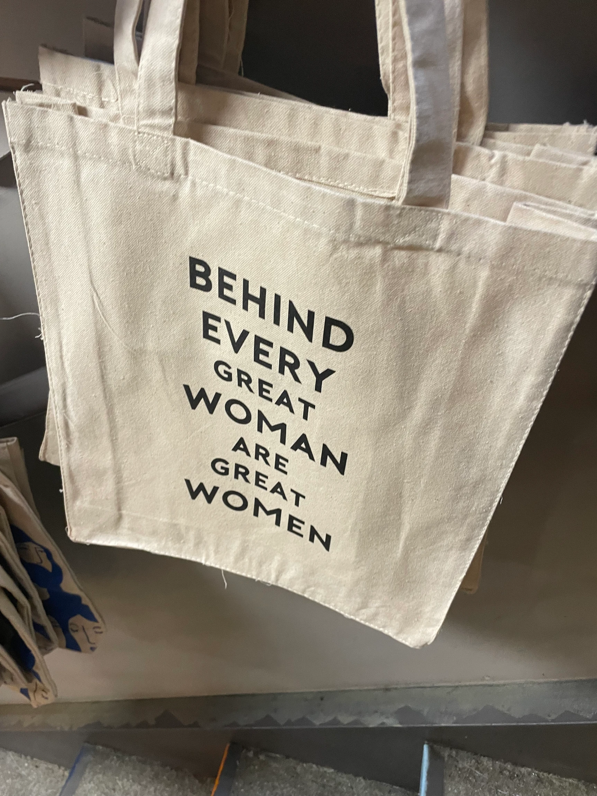
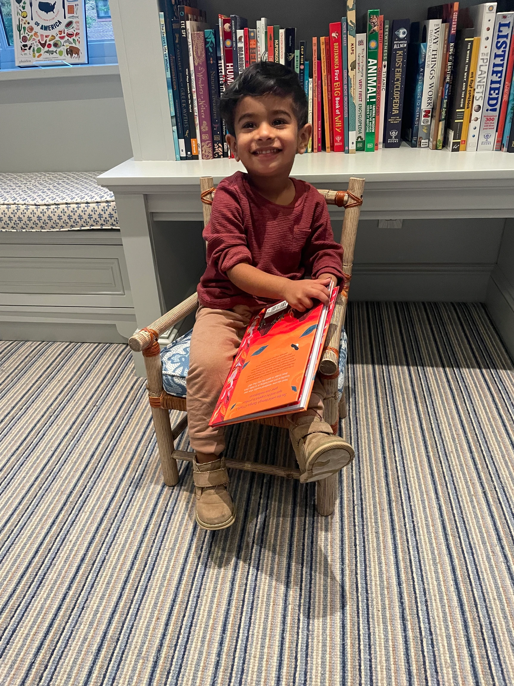

My Favorite Book Spaces in Boston
Boston Public Library700 Boylston St

The Boston Public Library, or as my friends and I say, the BPL (pronounced bipple), is probably one of my favorite places in Boston. There is so much to explore and so many places to hang out and study or read. There is the "old" part with the ancient architecture and buildings, as well as the "new" part of the library that looks more like a modern library. I enjoy both parts for studying purposes. The older part does have what I like to call the Harry Potter study room, because it looks like the Great Hall from Harry Potter, but this does fill up quickly. The newly renovated part also has a cafe, which is nice for us coffee lovers :)
Trident Bookstore
338 Newbury St

I came across this bookstore when I was exploring Newbury Street my first week in Boston! It is very cute and the atmosphere is very warm and friendly. There are two floors of books to discover and it was very fun to walk through. I haven't tried it yet, but there is a cafe and seating, so it would be a great place to hang out or read in. There are also a lot of cute trinkets to buy and I found this tote bag that made me smile!
Beacon Hill Books & Cafe
71 Charles St

This is definitely one of my favorite bookstores that I have ever been to! It just opened and it is a beautiful 5 story bookstore with different genres on each floor. The first floor is a cafe, which sadly was not open when I last went, but when it's open it seems like it will be such a cool environment to relax in. Each floor is designed so well, to fit the genres of the books on that floor. My favorite floor is probably the children's floor, because of the design and nostalgia that the books on the floor bring me. Also, I went there with my little cousin and it was the BEST experience. 10/10 recommend.